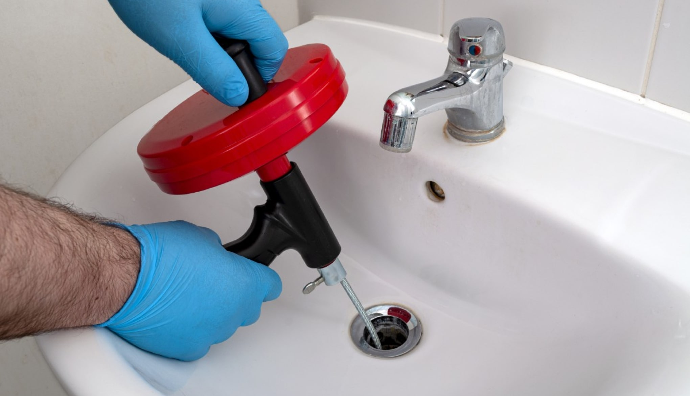

Débouchage et Nettoyage de Drains
Élimine efficacement les débris et les blocages des canalisations pour garantir un bon écoulement et éviter les inondations ou les dégâts des eaux.
- Réparation rapide et efficace des canalisations endommagées pour restaurer leur fonctionnalité et éviter d'autres problèmes.
- Des travailleurs expérimentés et qualifiés assurent un diagnostic précis et une résolution efficace des problèmes de vidange.
- Prévient les risques potentiels pour la santé et les odeurs nauséabondes causés par des canalisations bouchées ou endommagées.
- Améliorez la fonctionnalité et la valeur globales de votre propriété en entretenant un système de drainage qui fonctionne bien.
Galerie
×